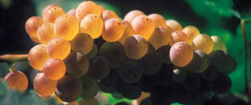
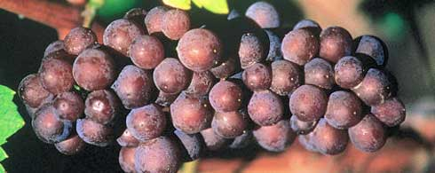
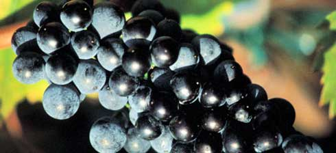
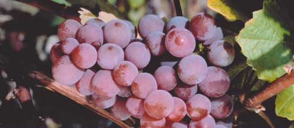
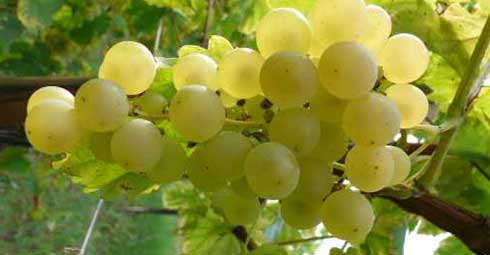
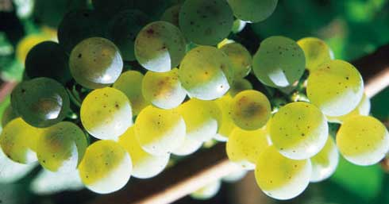

Choosing the right Alsace Wine
A romantic dinner for two, an impromptu get-together with friends, a family meal to plan…The sheer diversity of Alsace wines makes them the perfect accompaniment to mark all manner of occasions: delicate and refined wines to celebrate more formal occasions, wines rich with heady aromas to capture your guests’ imaginations from cocktails throughout dinner, or crisp and thirst-quenching wines for any meal, from simple to gourmet. For every occasion, there is an Alsace wine to choose from.
And because it is not always easy to find the right wine and food pairing, please find below a selection of recipes, with the perfect Alsace wine to match.
You will discover that they are also at home paired with products of the sea as well as with a wide variety of appetizers, poultry, white meats, game, foie gras, exotic and ethnic recipes, cheeses desserts. All you have to do is serve them: Our sommelier suggests recommendations for tasting under the best conditions!
-

Pinot Blanc
-

Pinot Gris
-

Pinot Noir
-

Gewurztraminer
-

Muscat
-

Riesling
To be improved...